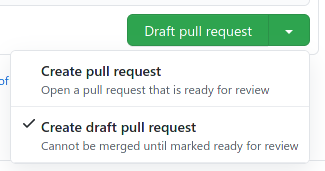
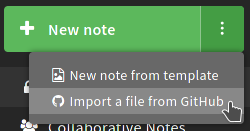
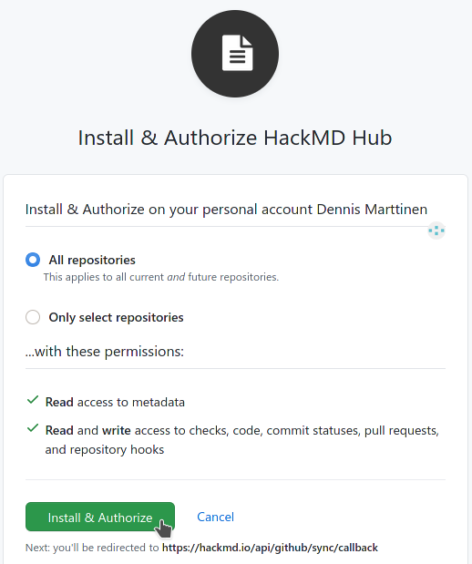
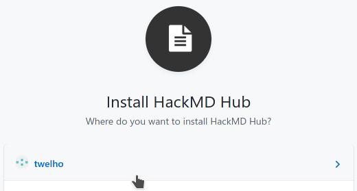
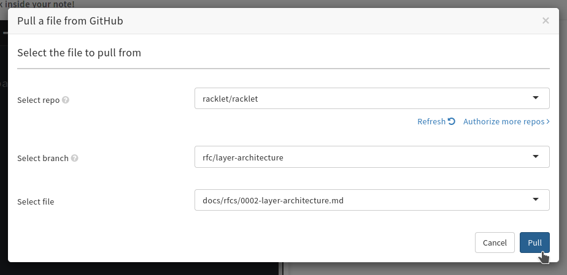
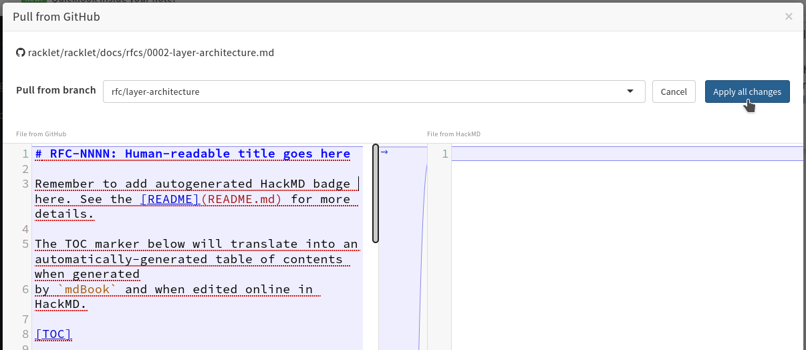
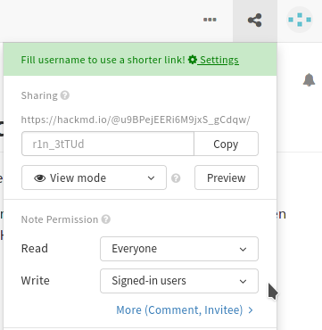
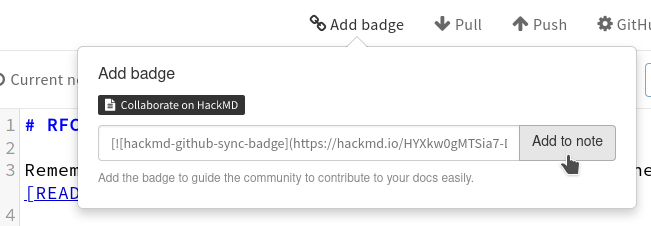
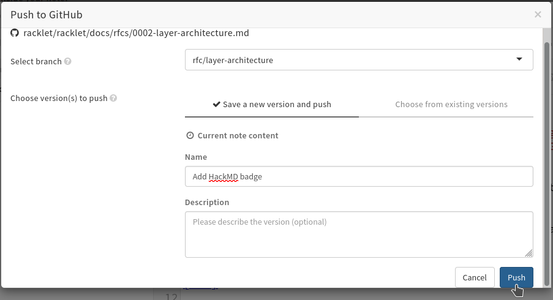
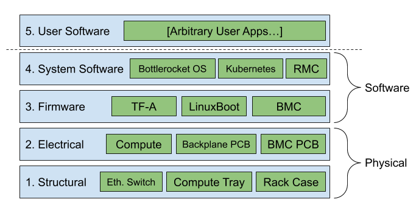

racklet
Open source scale-model of Data Centers using commodity compute like Raspberry Pis.
What is Racklet?
Work in progress, more information to be submitted soon.
Until then, please refer to RFC 1.
You can also look at the introductory presentation and slides during KCD Africa.

Contributing
Please see CONTRIBUTING.md and our Code Of Conduct.
Other interesting resources include:
Getting Help
If you have any questions about, feedback for or problems with Racklet:
- Invite yourself to the Open Source Firmware Slack.
- Ask a question on the #racklet slack channel.
- Ask a question on the discussions forum.
- File an issue.
- Join our community meetings (see also the meeting-notes repo).
Your feedback is always welcome!
Maintainers
In alphabetical order:
- Dennis Marttinen, @twelho
- Jaakko Sirén, @Jaakkonen
- Lucas Käldström, @luxas
- Verneri Hirvonen, @chiplet
License
Request For Comment (RFC) Process
A well-defined process for improving Racklet over time in a structured and efficient manner.
Motivation
In order to make a significant change to Racklet; one must first write up a document to clearly describe what the proposed change is, why the change is needed, how to successfully get to the desired goal, and any alternatives considered before settling on a given design. This process is inspired by, and in some aspects similar to, Rust's RFC process and Kubernetes' KEP process.
The accepted RFCs live in this folder. RFC-0000 is the template used as the base for new RFCs, it is inspired by and a combination of the Rust RFC template and the Kubernetes KEP template.
RFCs are formatted using the syntax used by hackmd.io, i.e. a superset of the
GitHub Flavored Markdown (GFM) dialect that GitHub supports. Hence, the RFC might not render as nicely in the
GitHub preview as on HackMD. Each RFC should have its own Collaborate on HackMD badge.
While the RFC lives in a PR (i.e. it hasn't been accepted yet), it is sensible to have pretty open editor
permissions in HackMD (i.e. anyone can edit, or those who are signed in to HackMD using GitHub can edit),
but after the RFC is accepted, and merged to the main branch, the document should be made read-only.
TODO: Look into automating HackMD permission changes using e.g. GH Actions.
Creating a new RFC
In order to create a new RFC, you should do the following:
-
Clone the
racklet/rackletrepository. If you do not have push access to theracklet/rackletrepo, fork the repository first. -
Create a branch for your RFC, e.g.
rfc/foo -
Copy-paste the 0000-rfc-template.md into a new file following the naming schema
docs/rfcs/NNNN-foo.md, whereNNNNis the RFC number. -
Commit the addition of that RFC file. There's no need to change the template quite yet.
-
Push your branch to GitHub, and open a Pull Request in Draft state (choose the dropdown on the
Create Pull Requestbutton, and choose theCreate draft pull requestoption)- 
-
Go to hackmd.io, and sign in with your GitHub credentials.
-
In the overview page, click the three dots
...inside the greenNew Notebutton, and from the drop-down menu chooseImport a file from GitHub- 
-
HackMD will take you to the note editor, and ask you to authenticate with GitHub (again!). Click the button to authenticate and authorize HackMD to read repositories from your account. You can allow all repos, or only some specific ones, but if you have a fork of the
rackletrepo, make sure that one is in the selected set.- 
- Note: The
rackletorganization already has enabled the HackMD integration; but for some reason (that seems like a bug) HackMD forces you to authorize some repo from your own account, before you can access repositories in organizations (if you are a maintainer).- 
-
Next, select either
racklet/rackletor your fork as the repo to "pull", the branch you just created as the target branch, and the path to the file you just created in the HackMD UI, and then proceed.- 
-
HackMD will show a "diff" and explain it'll pull the file you just selected from GitHub into the note. Continue.
- 
-
Now, you're almost done! Make sure that anyone can edit (or users logged in to GitHub) and anyone can view by. checking the permissions using the "share" button next to your profile picture. NOTE: Do not click the big blue "Publish" button, it not for saving your updated permissions, but instead publishes the file for search engines.
- 
-
Click the three dots
...in the top-right corner, selectVersions and GitHub sync, andAdd badge- 
-
HackMD will now add a badge to the top of the document, that allows reviewers of the PR to easily jump to the online edit view. Next, click
Push, select the same branch as your PR lives in, and write some commit message, e.g.Add HackMD badge. Finally, clickPush.- 
-
You can now verify on GitHub that HackMD created a commit for you in the PR.
Editing/updating an RFC
While the RFC has not been merged, feel free to edit the document in HackMD (quickly open it using the badge on top of the document). Whenever you want to synchronize the changes to GitHub (do this fairly often, we don't want a large diff between GitHub and HackMD), just repeat the push procedure.
If the RFC has already been merged (and the document on HackMD is read-only):
- Create and push a new branch, based on the latest
main, for example as follows:git checkout maingit pullgit checkout -b rfc/foo-updategit push --set-upstream origin rfc/foo-update
- Enable the editing permissions in HackMD for the file again, and make your changes and push.
- NOTE: Make sure to re-target HackMD to push to your new branch instead of the original one!
- Draft a new pull request for the updates.
Although discouraged, if external changes are done by e.g. pushing a commit directly to GitHub or merging review suggestions, you need to perform a pull in HackMD to get it up to date again. Reviews should be done exclusively on GitHub, in the pull request for the RFC.
NOTE: This, for the time being, might not fully work as expected for non-maintainers. If you encounter an issue with this process, please open an issue, and we'll try to resolve it to make things as convenient as possible. We'll improve this process over time to make contributing RFCs smoother for non-maintainers as well.
RFC-NNNN: Human-readable title goes here
- RFC Metadata
- Summary
- Motivation
- Proposal
- Drawbacks
- Rationale and alternatives
- Prior art
- Unresolved questions
- Future possibilities
- Implementation History
RFC Metadata
Authors (in alphabetical order):
- Author Name, @Author_GitHub_Handle
- Foo Bar, @Foo_Bar
Status (as defined here): Provisional
Creation Date: YYYY-MM-DD
Last Updated: YYYY-MM-DD
RFC Handle: rfc-template (should match the file name, as NNNN-{rfc_handle}, but without the .md suffix)
Initial Pull Request: racklet/racklet#NNNN
Tracking Issue: racklet/racklet#NNNN
Version Number: v1.X.Y
Summary
One paragraph explanation of the feature.
Motivation
Why are we doing this? What use cases does it support? What is the expected outcome?
Goals
What is in scope for this work?
Non-Goals
What is out of scope for this work?
Proposal
This is the technical portion of the RFC. Explain the design in sufficient detail that:
- Its interaction with other features is clear.
- It is reasonably clear how the feature would be implemented.
- Corner cases are dissected by example.
The section should return to the examples given in the guide-level explanation below, and explain more fully how the detailed proposal makes those examples work.
Values
Describe what values does the proposed feature reflect. See RFC-0001.
User stories
Explain what is the use case of the proposed feature and how it would benefit the user.
Guide-level explanation
Explain the proposal as if it was already a feature of the project and this would be the documentation for that feature.
- Introducing new named concepts.
- Explaining the feature largely in terms of examples.
- If applicable, provide sample error messages, deprecation warnings, or migration guidance.
- If applicable, describe the differences between teaching this to a Racklet administrator versus a Racklet end user.
Risks and Mitigations
What are the risks of this proposal and how do we mitigate. Think broadly. For example, consider both security and how this will impact the larger ecosystem.
Drawbacks
Why should we not do this? Consider at least one drawback.
Rationale and alternatives
- Why is this design the best in the space of possible designs?
- What other designs have been considered and what is the rationale for not choosing them?
- What is the impact of not doing this?
Prior art
Discuss prior art, both the good and the bad, in relation to this proposal. A few examples of what this can include are:
- For community proposals: Is this done by some other community and what were their experiences with it?
- For other teams: What lessons can we learn from what other communities have done here?
- Papers: Are there any published papers or great posts that discuss this? If you have some relevant papers to refer to, this can serve as a more detailed theoretical background.
This section is intended to encourage you as an author to think about the lessons from other projects and provide readers of your RFC with a fuller picture. If there is no prior art, that is fine - your ideas are interesting to us regardless of whether they are brand new or adaptations from other projects.
Unresolved questions
- What parts of the design do you expect to resolve through the RFC process before this gets merged?
- What parts of the design do you expect to resolve through the implementation of this feature before stabilization?
- What related issues do you consider out of scope for this RFC that could be addressed in the future independently of the solution that comes out of this RFC?
Future possibilities
Think about what the natural extension and evolution of your proposal would be and how it would affect the project as a whole in a holistic way. Try to use this section as a tool to more fully consider all possible interactions with the project in your proposal. Also consider how this all fits into the roadmap for the project.
This is also a good place to "dump ideas", if they are out of scope for the RFC you are writing but otherwise related.
If you have tried and cannot think of any future possibilities, you may simply state that you cannot think of anything.
Note that having something written down in the future-possibilities section is not a reason to accept the current or a future RFC; such notes should be in the section on motivation or rationale in this or subsequent RFCs. The section merely provides additional information.
Implementation History
Major milestones in the lifecycle of a RFC should be tracked here. Major milestones might include:
- The status of the RFC has been changed or another major change to the RFC has been accepted.
- The first Racklet version including an initial version of the RFC is released.
- The Racklet version where the RFC graduated to general availability is released.
- The RFC version number has been updated
- The RFC has been retired or superseded.
RFC-0001: Racklet
Download as PDF (for docs.racklet.io)
RFC Metadata
Authors (in alphabetical order):
- Ayan Borthakur, @ayan1948
- Dennis Marttinen, @twelho
- Lucas Käldström, @luxas
- Verneri Hirvonen, @chiplet
Status (as defined here): Implementable
Creation Date: 2020-12-10
Last Updated: 2020-06-08
Version Number: v1.1.1
Summary
Racklet is a fully-integrated, miniature server rack. It is a scale model of a hyperscaler server rack loosely based on the Open Compute Project (OCP) rack designs. It consists of several pluggable "compute units", a Rack Management Controller (RMC) and shared power delivery (the so-called busbar). In addition, there is some functionality borrowed from OCP Edge Cloud implementations in place, such as a common interconnect for the compute units (SMBus).
Physically a Racklet rack is a bit larger than a one liter milk carton and hosts single board computers conforming to the Raspberry Pi 3/4 form factor. The defining features of Racklet compared to other "Raspberry Pi clouds" are the fully integrated and secure but still pluggable open source firmware/software/hardware solutions, and the scalability enabled by e.g. hotplug support as well as the inexpensive and available manufacturing techniques applied.
Racklet aims to inspire their users to explore how modern, advanced server architectures work in practice, in a tangible and educational way. With the new-found knowledge and inspiration, the user may apply their modernization skills on traditional server infrastructure, which improves the status quo and pushes the industry forward. The aim of the project is also to write modular pieces of software and firmware that can be re-used across a diverse set of systems, not only on Racklet itself.
Racklet is defined by its values and principles. Below you can read about the 9 values that shape this project, and what they mean in practice. One value to highlight here is accessibility. Racklet is 100% open source and should be accessible to a group as diverse as possible from all over the world. This means all parts of the system should be reproducible through open PCB designs, 3D-printed casing, and commodity, off-the-shelf hardware. We want to lower the barrier of entry for this domain.
In this RFC, we will outline what Racklet is, why create it (from the user's perspective), and the values and design constraints for the system.
In short, we'd like to say that
Racklet aims to be for Cloud Computing what Raspberry Pi is for Programming, and Arduino for Electronics
Have fun tinkering with it!
Motivation
Problem statement (choose the one that appeals to you):
Distributed systems of various kinds are steadily becoming the foundation for all important technological environments; and their backends require ever-increasing capacity. The world of cloud computing software is rapidly evolving towards dynamic, scalable and self-correcting systems. The amount of tools and services required to run high-performing cloud systems in a diverse range of environments are vast, and the integration between them complex1. Due to the complicated nature of this quickly-evolving cloud infrastructure, how can newcomers to the field of cloud computing get an idea of the landscape and workings of the systems in an effective way?
and/or
Empirically, it seems that many mainstream server and infrastructure provisioning guides (or even fully-integrated solutions) often don't put enough effort into securing the firmware stack of the server, but focus more on the layers above. This, in combination with the firmware being proprietary, often leads to situations of unknown/random bugs and security flaws (caused by the user due to insufficient knowledge, or flaws in the firmware without patched versions). Different pieces and layers of firmware doing the same things (and often too much) in subtly different ways, but without it being possible to only activate what you need or want to extend. Firmware written in C suffers from many common memory errors and even security flaws. Network booting of servers often stick to legacy and unreliable protocols like TFTP or similar, and skip any verification of the payload's integrity or authenticity.
Proposed solution:
As detailed in the Summary section above, "Racklet is a fully-integrated, miniature server rack". Building on top of good ideas and practices from OCP, the open source firmware community (e.g. LinuxBoot, u-boot, TF-A, etc.), the Raspberry Pi educational model, and the advancements in writing secure system software and firmware with Rust, we think we can push the state of the art here, and educate newcomers to the field of secure and open source cloud computing at the same time.
As pointed out in the first problem statement, it can be challenging to "get into" to the server infrastructure world, especially if you want to run your own servers, due to a multitude of reasons, including complexity, lack of standardization at several layers of the stack, and cost. Through Racklet, we want to explore these venues in a tangible and low-cost way with the help of Raspberry Pi's (or alternate single board computers). It has been shown earlier that Raspberry Pis can be helpful for teaching cloud computing2, hence we believe this could be a good fit.
The goal of the project is to be comprehensive and "real-world" enough to feature, at least conceptually, most of what you would find in a modern hyperscaler server infrastructure environment, but still clear, well-documented, and user-friendly enough to attract and welcome new, future talents to the server and firmware worlds.
Goals of this RFC
- Describe what Racklet is and what it might be used for.
- Define the values used to guide the design and decision process.
- Describe the purpose and goals of the system from a user point of view.
- Define high-level layers of the system.
Non-Goals of this RFC
- Go into details about what any layer, interface or API contains or does.
- Describe what exact parts, technologies or interfaces should be used.
- Define a timeline for the project.
- Define project governance.
Proposal
This proposal consists of a detailed breakdown of the Values of the project, who we think will be using this project (what kind of user persona we are optimizing for, in User Perspectives), how we envision the users will use it (User Goals), and finally, a high-level overview of the hardware/software Layers.
Any further technical details are out of scope for this RFC. Those will be covered by upcoming, more detailed RFCs.
Values
The following values apply to the whole system, and are sorted roughly in priority order, as a guideline when making decisions. Future RFCs should outline in their "Motivation" chapter what values have (or have not) been adhered in the RFC and how.
Disclaimer: All of these values are aspirational, they are not literal guarantees that can be used for liability claims. We expect to iteratively improve towards and get closer to these goals as the project matures and new versions are released.
-
Security
- Security by design: Security should be at the top of our minds at every decision we make. All design proposals must consider how the proposed change affects security concerns.
- No old/insecure protocols: We won't accept old/insecure protocols or ways of doing things (e.g. TFTP). If we need to choose between interoperability and an insecure standard, we choose the more secure alternative, although that would mean we go against the norm.
- Improve status quo: We aspire to improve the status quo of "secure-by-default" solutions and concepts available out there. When we find ways to improve the state of the art, we preferably contribute patches to the respective upstream, otherwise, depending on the situation, build re-usable pieces of code that bring the industry forward.
- Defense in depth: Design according to the "defense in depth" and "least privilege" methodologies. For example, the network is considered being an insecure channel, unless proven otherwise (Dolev-Yao adversary model).
-
Interoperability
- Openness: The truly most effective way of driving innovation forward in our minds is to define open (source) APIs, share code freely, and collaborate with fellow community members.
- De-facto standards: Implement well-known, existing and de-facto APIs instead of creating new ones when not needed.
- Declarative management: This is prominent in the cloud native space, but not so much in the embedded and firmware space. We believe declarative APIs are very useful and powerful, especially as it becomes "obvious" to write state reconciliation loops that follow the observe-diff-act pattern.
- Consistency: We want to expose consistent (declarative) APIs across the stack for the same "look and feel". Use common meta-protocols like JSON and YAML.
-
Accessibility / Reproducibility
- Open source: Racklet is 100% open source software and hardware. Anyone can contribute, improve, fork and access the project. The dependencies of the project will also be openly accessible.
- Common off-the-shelf parts: Only use commonly available components that can be aquired in most parts of the world in a frictionless manner. In other words, no exotic hard-to-reproduce designs.
- 3D printed parts: For non-off-the-shelf casing, we will provide 3D-printable designs that can easily be reproduced. Modelling is done in software that does not require paid-for subscriptions. Both printable STL output and the underlying save files are published to GitHub.
- Reproducible PCBs: For non-off-the-shelf PCBs, we will release schematics freely reproducible, made in open source software such as KiCAD. We will try to make sure that the PCB can be ordered from major PCB manufacturing/assembly services.
- Documentation: Documentation will be made available through our mdBook site, our GitHub organization, code-autogenerated documentation services such as crates.io and pkg.go.dev as well as our blog detailing the development process and important decisions made, featuring these design proposals. This documentation will lower the bar to entry in order to increase accessibility.
-
Modularity / Compatibility
- Modular design: Our designs, both hardware and software, strive to be as modular and extensible as possible. We strive to follow the Unix philosophy. This will allow for portability between e.g. different hardware modules implementing the same interfaces, or extensibility where the user demands other features than the default.
- Raspberry Pi compatibility: The Raspberry Pi physical design (mounting holes, GPIO layout, dimensions, HAT spec) has established a "de facto" standard, and any other single-board computer implementing this interface should be compatible with the system with minimal modifications.
- Portability: The code we write includes parameters for the platform it's running on so it is fairly easy to port the code to a new alternate architecture. We primarily support ARMv8 for the compute units.
- Loose coupling: We strive towards loose coupling. This means that each component has as little knowledge of and hard dependencies on other components. Components should be easily interchangeable with alternate implementations.
-
Transparency
- Observability: All data logging/aggregating components in the system must expose metrics compliant to the OpenMetrics specification.
- Debuggability: We expose standardized debug headers (e.g. UART/JTAG) from our PCBs. Low-level firmware troubleshooting is accessible and documented for both our microcontrollers as well as the compute.
- Energy monitoring: Energy usage should be measured individually for the various components in the system, in order to transparently and automatically be able to track where power is consumed. This also allows for higher-order aggregation and data processing related to energy.
-
Maintainability / Upgradability
- Hot swappability: Modules of the system (especially the compute) should be able to be hot-swapped without disturbing the operation of other modules in the rack while the rack is operating.
- Upgradability: The modularity of the system should allow that individual pieces of the system (e.g. compute, storage, network switches, power supplies) should be upgradable without having to disrupt the rest of the rack, or disregard existing, functioning parts. This will minimize E-waste produced over time.
- Auto-upgradability: It should be possible to enable automated (security) upgrades safely using e.g. A/B partitioning schemes.
- One-time hardware setup: The hardware setup steps (3D-printing, PCB assembly, firmware flashing) are only performed once per rack. None of them are performed when dealing with software, even when resetting the entire cluster. This will allow for fast and less error-prone reconfigurations with faster setup/teardown cycle times.
-
Affordability
- Sensible rack cost: The price point of the Racklet Bill-of-Materials should be low enough to be accessible for hobbyists and educational organizations. Our target price range (VAT-exclusive, all essentials included) is 400-500€ per rack (containing 5 Pis). If this configuration is too costly it should be possible to switch parts out for a lower total price.
User Perspectives
Main User Persona: "Racklet is for a student, hobbyist, teacher or industry professional who wants to learn and understand modern, increasingly important distributed and cloud computing skills to foster education, research and work opportunities."
Tangible Cloud Teaching
A University distributed computing class could use one or multiple Racklets as a prototyping platform to enable fast learning augmented by practical training.
Mobile Cluster for Conferences
Companies demoing their software and hardware at conferences could use this as an innovative way to showcase their solutions.
CTF contests
As this aims to be a scale model of a real cloud environment, it forms a good target for capture-the-flag hacking contests.
Workshops
In the same spirit as the Tangible Cloud Teaching use-case above, we anticipate it would also be a good fit for commercial trainings, when time is limited and you quickly need to demonstrate how some specific piece of technology works in detail. The instructor can easily engage their audience in a practical way.
Homelabs
Hobbyists could use one or multiple Racklets to establish home infrastructure while learning more about and further developing the platform.
Research and Development
Racklet can be used for Research and Development purposes in Computer Labs where some specific application's architecture is being validated on a real-world but inexpensive system. This is an alternative to data center simulation programs. Racklet captures the real-world aspects that a simulation might not take into account or can not realistically represent. Realistic outages and partial failure modes (e.g. power outages or network partitions) can easily be applied to the system in order to research how the tested application reacts.
User Goals
-
Achieve user goals through containers and Kubernetes: The user wants to use containers and Kubernetes as their preferred way of running applications, and hence some base functionality of that should be provided in a "batteries included, but swappable"-sense. At the end of the day, we're building this project so that the user can build something nice on top of it through these standard interfaces.
-
Fast reconfiguration / turn-around time: The user wants to configure their hardware once, and after that be able to set up and/or recreate the whole software stack from the ground up multiple times over with minimal hassle. For example, an educator may want to rebuild the rack configuration, trusted certificates, etc. or do a "factory reset" for every class/workshop they run.
-
Secure firmware3 and software updates: When the user gets notified that a new release is available, the user doesn't want to do it the "classical" way of downloading some hex binary and flashing it manually for each server. Instead, they want the upgrades to be atomic (e.g. A/B partitioning), secure (payload is signed), automated and defend against common upgrading attacks (e.g. rollback attack). Optionally, automatic deployment of upgrades can be enabled.
-
Network boot in a zero-trust environment: The user should feel ready to plug Racklet in to (almost) any existing network, without the system interfering with existing devices on the network or vice versa. This goes strongly in hand with #3 as ensuring security, especially in the boot and upgrade process, is of paramount importance4.
-
End-to-end encryption and authentication: The user wants to feel comfortable running software on top of their Racklet without worrying about e.g. MITM attacks in the surrounding untrusted network it is connected to. Hence, all TCP/IP traffic should be end-to-end encrypted, authenticated or preferably, both.
-
Hot swappability: The user wants to be able to upgrade their racks often for newer hardware as they enter the market. The user also wants to be able to maintain and service the rack while it is running, and dynamically expand capacity at runtime.
-
Keep track of power usage and efficiency: For educational purposes and intelligent power control, it is important to know how compute utilization translates to power consumption across the system. The user wants transparently reported metrics so that they can analyze the data and utilize higher-level power control routines to optimize power draw.
-
Physical portability: Racklet should be lightweight enough to be carried by hand and should not require specialized equipment or disassembly for transportation.
-
Commodity power and I/O: The user wants to be able to utilize commodity resources they already have at hand, instead of needing to buy specialized equipment only for Racklet. Examples of these commodities include: Laptop chargers instead of a custom power cable/transformer, USB instead of some proprietary high-speed interconnect, and Ethernet switches & cables instead of e.g. expensive SFP+.
Design Details
The only design detail in-scope for this document is defining the layers of the system at a high level.
High-level Layers
The following section will go through the various layers of the system and the requirements/contract of each of the items.

Layer 1: Structural
This layer of the "stack" consists mainly of the 3D-printed casing and trays of the rack. The Ethernet switch optionally attached on the side of the rack can also be considered a structural item.
Layer 2: Electrical
This layer consists of compute capacity (e.g. a Raspberry Pi with an attached SSD), our reproducible Baseboard Management Controller PCB attached to it in some way (as also can be found in mainstream servers), and our reproducible backplane PCB/wiring which feeds the common busbar power rails, and the SMBus interconnect between compute units.
Layer 3: Firmware
The firmware layer is defined as the code that is running in "bare metal" environments, i.e. on the compute before the primary OS has been loaded, or on the BMC microcontroller. Examples of code that is capable of (and specialized at) running before the primary OS includes the (proprietary) Raspberry Pi firmware, LinuxBoot, u-boot, and TF-A. We strive to use open source Embedded Rust due to the language's suitability for memory safe firmware and good support for most popular microcontrollers.
Layer 4: System Software
The system software includes everything the system needs to run in order to fulfil the user goals. All applications at this layer are built for and depend on Linux. As per above, we expect the user to utilize Kubernetes, and hence there is a default (but replaceable) installation of that. We will also pre-install a (configurable) operating system (OS), e.g. Bottlerocket, so that the user can get going without too much preliminary work. In addition, we will implement the Rack Management Controller features at this level.
Layer 5: User Software
At this layer are the user-deployable workloads running in containers, we consider them as "user-space applications". This layer is not part of the Racklet project, it is entirely user-defined. This is also a good place for users to extend Racklet and add extra functionality of their liking.
Test Plan
Unit tests will be created for individual software components of the system. Integration tests will be created for cross-component communications. Automated end-to-end tests will be conducted by a physical Racklet instance that is continuously "upgraded" to the latest development version and reports feedback. This way we will assure the stability and resilience of the software/firmware stack.
Furthermore, we will rely on the developer community to test out many different hardware, software and firmware combinations other than the reference implementation.
Graduation Criteria
For this project to be considered successful and graduated, we mandate the following:
- There is a vibrant open source community around Racklet
- Racklet fulfils all of the above mentioned User Goals to a sufficient degree (as determined by the RFCs addressing respective functionality)
- It has been end-to-end tested and verified working by following the documentation by someone external to the core contributors team
- It has been successfully used for educational purposes, e.g. in a university course and/or a workshop
Implementation History
2020-12-10: First version of this RFC has been accepted.2021-06-07: Values have been refined, misc. clarifications and readability improvements.2021-06-08: All values, subvalues and user goals have been given IDs for referring to them.
See “8 ways the cloud is more complex than you think | CIO.” and “Cloud Computing, Once Loved For Its Simplicity, Is Now A Complex Beast.” (accessed Dec. 05, 2019).
"KubeCloud: A Small-Scale Tangible Cloud Computing Environment". Master's thesis in Computer Engineering at Aarhus University by Kasper Nissen and Martin Jensen. Published June 6th, 2016. Download PDF here
For example the 1st stage bootloader of the Raspberry Pi 4 is currently closed source software which we cannot audit or modify, and hence cannot use as a "complete end to end" hardware root of trust. However, such non-idealities don't stop us from getting as close as possible to full hardware root of trust, and more importantly, conceptually being consistent in the way we work with these SBCs and "normal" servers.
At least initially this does not mean that the system is 100% secure, there are both some practical limits3 and software/hardware features that need to be explored for improved security (e.g. ARM TrustedFirmware).
RFC-0002: Layer Architecture
Download as PDF (for docs.racklet.io)
- RFC Metadata
- Summary
- Motivation
- Proposal
- Rationale and alternatives
- Prior art
- Unresolved questions
- Future possibilities
- Implementation History
RFC Metadata
Authors (in alphabetical order):
Status (as defined here): Provisional
Creation Date: 2021-04-15
Last Updated: 2021-07-02
RFC Handle: 0002-layer-architecture
Initial Pull Request: racklet/racklet#20
Tracking Issue: racklet/racklet#21
Summary
This RFC describes the overall Racklet architecture, its defining layers, and requirements for each such layer, derived from RFC-0001. For each layer the defining components are described at a high level (avoiding implementation details). The components are associated with their role and five highlighted key requirements from the values and user goals of RFC-0001.
Motivation
With this RFC we aim to clearly define the layers Racklet consists of to provide a clear overview of the system for all contributors and maintainers. Additionally this document concisely presents the techniques and technologies used in the various layers to achieve the goals stated in RFC-0001.
Goals
- Define well-known layers of Racklet.
- Describe the requirements for each layer.
- Briefly discuss "Racklet conformance" from an architectural perspective.
- Highlight some differences between Racklet and other similar alternatives.
Non-Goals
- Describe the details and/or technical implementations of the various layers. See the detailed RFCs for the layers if looking for that information.
- Cover every minor component or implementation-specific components, this RFC is designed to only give an overview.
Proposal
Racklet is divided into 5 distinct layers, from highest-level to lowest-level:
- User Software
- System Software
- Firmware
- Electrical
- Structural
There is some overlap between these defined layers, mostly due to individual components contributing to multiple layers, but we aim to keep a clear distinction in this definition. If for example a microcontroller is part of both the electrical and firmware layer, the electrical layer only considers its electical properties and the firmware layer only its firmware.
The architecture is designed with the layers and their interaction as the primary focus. The requirements of a layer drive the design of the layer below it, which aims to satisfy the dependencies according to the values and user goals of the project. The layers are described here in reverse order (layer 5 first), since the highest layer starts the dependency chain by directly fulfilling the user goals.
5. User Software layer
Summary: The user software layer should allow the user to schedule workloads of choice using either containers or VMs. There should be an accessible and observable graphical user interface in place for the user to monitor and manage the Racklet system and workloads.
Goals:
- Enable the user to observe and manage a Racklet cluster
- Enable easy deployment of container/VM workloads
- (Optionally) make a Kubernetes cluster accessible for the user
Layer components:
| Component | Role | Key Requirements |
|---|---|---|
| Micro Virtual Machine orchestration | Define and run VMs declaratively | Improve status quo, Openness, Declarative management, Documentation, Fast reconfiguration |
| Kubernetes deployment automation | Consume/use a Kubernetes cluster | De-facto standards, Declarative management, Loose coupling, Upgradability, Utilize Kubernetes |
| Racklet dashboard | Monitor rack and cluster state, deploy workloads | Security by design, Declarative management, Open source, Portability, Observability |
4. System Software layer
Summary: The system software layer is responsible for enabling the container/VM solutions of the user software layer. There should be a hypervisor in place for the virtual machines and a container orchestration solution (Kubernetes) for container workloads. Kubernetes is also leveraged for orchestrating the Racklet rack and performing managemental operations in a declarative fashion.
Goals:
- Support running containers/VMs securely and scalably
- Be fully declaratively configured using version control
- Enable secure communications inside the cluster
Layer components:
| Component | Role | Key Requirements |
|---|---|---|
| System Kubernetes installation | Run container workloads, perform management | Declarative management, Consistency, Modular design, Portability, Loose coupling |
| Hypervisor operating system | Run VM workloads, enable kernel-level security | Defense in depth, De-facto standards, Declarative management, Raspberry Pi compatibility, Portability |
| CNI compliant networking | Network the Racklet cluster compute units | Security by design, No old/insecure protocols, Openness, Observability, End-to-end encryption |
| GitOps tooling | Declarative management of the Racklet stack | Improve status quo, De-facto standards, Declarative management, Observability, Auto-upgradability |
3. Firmware layer
Summary: The firmware helps in securely booting and configuring Racklet compute, for example it is declaratively managed and performs cryptographic verification of payloads to boot. The firmware should also help with collecting hardware observability data and telemetry for monitoring and debugging.
Goals:
- Enable secure access to the declarative configuration in Git
- Verify payloads to be booted by the compute
- Enable debugging and observability of the hardware and compute
- Store keys and signatures for the above layers
Layer components:
| Component | Role | Key Requirements |
|---|---|---|
| u-root based bootstrap environment | Secure Git access, firmware updates and payload booting | Security by design, Improve status quo, Open source, Secure updates, Zero-trust network boot |
| BMC (Baseboard Management Controller) firmware | Compute booting and debugging, key and signature storage for software layers | Security by design, No old/insecure protocols, Declarative management, Debuggability, One-time hardware setup |
| RMC (Rack Management Controller) firmware | Rack hardware control and observability, e.g. fans | Openness, Declarative management, Loose coupling, Observability, Secure updates |
2. Electrical layer
Summary: The electrical layer backs the computational, power delivery and physical networking requirements of the compute. It also provides a means to run the firmware on the BMC and RMC (microcontrollers).
Goals:
- Provide computing capacity for the software layer
- Provide power for all components in a Racklet rack
- Provide a physical networking device for the software layer
- Provide a means to run the firmware for the compute and rack
Layer components:
| Component | Role | Key Requirements |
|---|---|---|
| Compute unit | Run the bootstrap and hypervisor operating systems and compute workloads | Common off-the-shelf parts, Raspberry Pi compatibility, Hot swappability, One-time hardware setup, Physical portability |
| BMC PCB | Host the BMC microcontroller and deliver power to the compute unit | Open Source, Reproducible PCBs, Modular design, Raspberry Pi compatibility, Energy monitoring |
| Backplane PCB | Rack level power distribution and inter-BMC connectivity | Common off-the-shelf parts, Reproducible PCBs, Physical portability, Hot swappability, Upgradability |
| Network switch | Provides networking for the rack (and cluster) | De-facto standards, Common off-the-shelf parts, Sensible rack cost, Physical portability, Commodity power and I/O |
1. Structural layer
Summary: The structural layer consists of physical components that form the structure of the Racklet rack. The structural layer enables Racklet to be compact, modular and easily transportable. The rack consists of a casing that hosts the backplane, network switch and slots for slide-in trays. The compute unit with its storage is attached to modular compute trays, that have matching rails for the slide-in slots in the rack.
Goals:
- Provide a rigid structure for hosting all components
- Enable component hot-swap and modularity
Layer Components:
| Component | Role | Key Requirements |
|---|---|---|
| Compute tray | Enable mounting of a compute unit in a hot-swappable and modular way | Open source, 3D printed parts, Modular design, Raspberry Pi compatibility, Hot swappability |
| Rack case | Contain the network switch, a power backplane and multiple compute trays | Open source, 3D printed parts, Modular design, Sensible rack cost, Physical portability |
Guide-level explanation
The layer architecture described in the proposals introduces some new named concepts and components. By layer, they can be explained as follows:
- User Software
- Micro virtual machine (microVM): A very light-weight virtual machine that is optimized for low resource consumption by omitting unnecessary features. Racklet uses these to enable low-overhead kernel-level isolation of applications.
- Kubernetes: A production-grade container orchestration system for runnign containerized applications across multiple (physical) compute unit. Kubernetes is leveraged for both running applications and managing the Racklet cluster.
- Dashboard: A (usually web-based) graphical user interface for monitoring and controlling software/hardware. Racklet incorporates dashboards for accessibility and observability.
- System Software
- Hypervisor operating system: An operating system base that is ready to run (micro) virtual machines using e.g. KVM. The operating system used on Racklet compute units should be light-weight and have hypervisor support.
- CNI networking: CNI is a standardized way to network containers for example in Kubernetes. It can however be leveraged across physical compute units and VMs as well, as is done in Racklet.
- GitOps: A way to declaratively manage Kubernetes (and other components) by storing declarative configuration files in a Git repository. This enables traceability of configuration changes and easy state transitions.
- Firmware
- Bootstrap environment: A small integrated Linux kernel and userspace responsible for securely resolving and booting a hypervisor operating system from the network. Racklet leverages u-root for the userspace component, and GitOps for accessing the rack configuration.
- BMC: Short for Baseboard Management Controller, it is a microcontroller helping with adminstrative tasks on the compute unit level. In the case of Racklet the BMC helps with tasks such as booting securely, verifying integrity and debugging boot issues. The firmware for the BMC will do much of the heavy lifting.
- RMC: Short for Rack Management Controller, it is an additional microcontroller on the rack level that manages shared resources such as cooling (fans), indicator lights/displays and optionally rack-level power measurement.
- Electrical
- Compute unit: the "server" of Racklet, i.e. a Linux-compatible computer in the Racklet rack that runs the VMs/containers/applications in a cluster setup. The reference implementation of Racklet focuses on the SBC (Single Board Computer) form factor for affordability, portability and accessibility.
- PCB: Short for Printed Circuit Board, both the BMC and the backplane of Racklet are PCB-based instead of having the user hand-wire the components together. Although PCBs and the associated SMD (surface mount device) components are more difficult to work with and require some expertise, due to their good state of accessibility and affordability nowadays Racklet is ready to take the tradeoff for a considerably more streamlined user experience.
- Network switch: As a cluster computer implementation Racklet requires computer networking between the compute nodes. The network switch enables connecting the compute nodes and racks together (and to the Internet). While the type of network switch is not limited here, Racklet aims to only require OSI layer 2 compatibility from the switch. This is why the switch is categorized the electrical layer since that type of switch has no distinct firmware and other "moving parts".
- Structural
- Compute tray: The compute tray is analogous to a server casing with rails in a traditional server rack. Since Racklet compute units are mostly of the SBC form factor, they most often have no integrated casing and no way to mount storage (i.e. an SSD/HDD) like a traditional computer case. Thus, Racklet has the compute tray to facilitate exactly that, it is a case (or plate) that mounts a compute unit and its storage and provides "rails" to slide into the Racklet rack with hot-plug support.
- Rack case: The physical structure hosting all compute units, PCBs, networking and power (conversion). In the reference implementation this resembles a down-scaled server rack for portability and educational value, but the form factor is not strict.
Note: These RFCs target a "reference" implementation of Racklet, as envisioned by its authors. The components and key requirements for them are described from the perspective of this reference implementation, and thus "community" implementations of Racklet (e.g. in a different physical form factor) don't need to strictly adhere to the requirements laid out here. A "Racklet compliant" system ultimately only required to follow the values laid out in RFC-0001 and the loose coupling hardware/software interfaces of the project. That said, it is still advised that variations of Racklet follow the layers, high-level components and key requirements in this document.
Risks and Mitigations
The Racklet team aims to adapt to community requirements and adaptations to keep the Racklet ecosystem cohesive. The project has three strategies to mitigate against the risk of the ecosystem fragmenting with incompatible hardware/software implementations of Racklet:
- Community contributions and suggestions are taken into account and encouraged.
- The project adapts to the usecases of its userbase to avoid community implementations steering different directions.
- Loose coupling is leveraged to the greatest possible extent.
- All components of Racklet shall depend on each other only through standardized interfaces, which enables the use of alternative implementations following those specifications.
- The layer architecture described here is not fixed.
- The layers are used to guide the design, but are not fixed bounds that require to be strictly adhered to. For example, a community-made component can be both part of the user software and system software layer without issue. The Racklet team is also open to feedback regarding the layer structure if you have improvement suggestions to the model.
Rationale and alternatives
As stated in Risks and Mitigations, Racklet is (one of) the first of its kind with regards to its specification-first architecture. The initial layer separation presented here is the result of an iterative thought process by the core Racklet authors. The five layers are chosen to clearly separate roles and responsibilities of components, without going into too much detail (too many layers) or causing excessive overlap (too few layers). Firmware and system software are separated to achieve loose coupling and clear, secure communication between them. User software is separated from system software to define a border between software mostly provided by the Racklet project and external software that the user introduces (workloads).
Loose coupling plays a very important role in the architecture presented here. Racklet could have been designed as a fully integrated system with implementations that are strictly defined by the project, but while this potentially could make the system more compact and simple, it also faces many drawbacks that make it incompatible with the values and goals of the project. For example, Racklet relies heavily on various different projects in the Open Source Firmware and Cloud Native ecosystems, many of which evolve quickly and provide alternative implementations complying to standard APIs. We want Racklet to be accessible, transparent and modular, which means supporting a wide variety of hardware, and enabling user customization to a great extent. If loose coupling is implemented properly, we believe that the standardized architecture presented here will be relatively simple to maintain and extend, and community-built Racklet solutions will also be able to use the modules and different software implementations effortlessly. In summary, to fulfill the values defined in RFC-0001 and to avoid ecosystem fragmentation the Racklet project aims to provide interfaces, not implementations.
Prior art
At the time of Racklet creation the history of Raspberry Pi (and other single board computer) based cluster computers is already very rich. Various private persons, educational insistutes and companies have come up with a wide variety of designs (e.g. KubeCloud1) for different use cases for at least the past 8 years. What sets Racklet apart from these mostly one-off implementations is it's specification. Instead of deriving a specification from some implementation, Racklet as a system is primarily defined as a set of RFC documents. This specification is intended to define a standardized way to build a miniature compute cluster, from the lowest-level hardware details up to a state-of-the-art software stack. Since the specification is defined from the ground up, we prioritize basing it on the most secure and modern technologies available today, essentially merging the core concepts of prior SBC cluster computer implementations with the state of the art security and fleet management models of large-scale cloud providers.
Unresolved questions
The architecture described in this document is prone to encounter changes as the detailed RFCs describing individual components/layers are established. It is also unclear if this particular layered architecture with the chosen high-level components is optimal, and thus the reference implementation will likely influence the structure here once it is better known what works and what doesn't.
Racklet is also a complex system, and this document in its current state can likely not provide the full picture of the architecture to an unfamiliar reader. To combat this, additional graphical elements such as architecture diagrams could be embedded into this document in a future revision (TODO).
The concept of "Racklet conformance" briefly disussed in Risks and Mitigations is not expanded upon here, but might warrant its own RFC specifically for community implementations.
Future possibilities
The layer definitions presented here are expected to evolve with the project. This document serves as a starting point for discussion, and records the current consensus. In the future the scope of this document might also include a thorough introduction to the architecture for newcomers to the project, as well as improved reasoning for particular high-level architectural decisions and how they are derived.
Implementation History
2021-07-20: This RFC has been accepted.
"KubeCloud: A Small-Scale Tangible Cloud Computing Environment". Master's thesis in Computer Engineering at Aarhus University by Kasper Nissen and Martin Jensen. Published June 6th, 2016. Download PDF here.
Contributing
We highly value and encourage contributions from the community!
Racklet is Apache 2.0 licensed and accepts contributions via GitHub Pull Requests. This document outlines some of the conventions on development workflow, commit message formatting, contact points and other resources to make it easier to get your contribution accepted.
We gratefully welcome improvements to documentation as well as to code.
Code of Conduct
We are excited about the prospect of you joining our community! The Racklet community abides by the CNCF code of conduct. Here is an excerpt:
As contributors and maintainers of this project, and in the interest of fostering an open and welcoming community, we pledge to respect all people who contribute through reporting issues, posting feature requests, updating documentation, submitting pull requests or patches, and other activities.
Community and Access
You can ask questions and discuss features on the #racklet Slack channel (you can get an invite at here).
In the future, we are also planning to start public, recurring community meetings where anyone can join and participate in the discussion by adding an agenda item to a public meeting notes document.
The community meeting notes document is here (see also the meeting-notes repo). Look out there for when the community meetings are, and follow the Slack channel.
Guidelines
If you have a feature suggestion, or general question about the project or its roadmap, head over to GitHub Discussions. If you've found a bug, go to GitHub issues and see if there's an open issue matching your description. If not feel free to open a new issue and add short description:
- In case of a bug, be sure to include the steps you performed and the outcomes as detailedly as possible so it's easy for others to reproduce
- If you have a feature suggestion, describe it in moderate detail and include some potential uses you see for the feature. We prioritize the features to be implemented based on their usefulness/popularity. Of course if you want to start contributing yourself, go ahead! We'll be more than happy to review your pull requests.
The maintainers will add the correct labels/milestones to the issue for you.
Contributing your code
The process to contribute code to Racklet is generally as follows:
- Go to the project on GitHub and click the
Forkbutton in the top-right corner. This will create your own copy of the repository in your personal account. - Using standard
gitworkflow,cloneyour fork, make your changes and thencommitandpushthem to your repository. - Go back to GitHub, select
Pull requestsfrom the top bar and clickNew pull requestto the right. Select thecompare across forkslink. This will show repositories in addition to branches. - From the
head repositorydropdown, select your forked repository. If you made a new branch, select it in thecomparedropdown. You should always targetracklet/racklet(or similar repository) andmainas the base repository and branch. - With your changes visible, click
Create pull request. Give it a short, descriptive title and write a comment describing your changes. ClickCreate pull request.
That's it! Maintainers follow pull requests closely and will add the correct labels and milestones.
After a maintainer's review small changes/improvements could be requested, don't worry, feedback can
be easily addressed by performing the requested changes and doing a commit and push. Your new
changes will automatically be added to the pull request.
If you have any questions or need help, don't hesitate to ask on our GitHub Discussions, through GitHub issues, or the #racklet Slack channel (you can get an invite at here).
Have fun contributing!
Racklet mdBook setup
docs.racklet.io is powered by technologies such as Rust's mdbook, GitHub Pages, GitHub Actions and a bit of Git LFS.
The source of the documentation is the docs/ folder of the main Racklet repository.
If you find typos or corrections you'd like to make, feel free to create a Pull Request to fix this!
(See also the contribution guidelines).
High-level automation overview
When a new PR is submitted, documentation is automatically (thanks to this CI script) generated from Markdown to HTML using mdbook. The "rendered" HTML is stored in the ./book/html folder of the repository.
When a PR is merged to the main branch, GitHub Actions kicks off the deploy script which
- downloads relevant Git LFS content from the origin (in order to upload e.g. PNGs and SVGs as-is)
- renders the HTML based on the source Markdown
- renders nicely-formatted PDFs for all RFCs
- creates a completely new Git repo (
git init), and commits the output HTML and PDFs in the "root commit" - finally, force-pushes this "root commit (that has Git LFS disabled) to the
gh-pagesbranch in therackletrepo
This flow has many benefits, including but not limited to:
- The ability to vet documentation PRs before they are merged (CI) (auto-publication of PRs is out of scope)
- Automatical deployment to the
docs.racklet.iosite with minimal hassle (just merge PRs, no need to host any server) - The ability for users to download print-optimized PDF versions of the RFCs.
- The ability to write high-level, easy Markdown, but render fairly advanced document features (e.g. Table of Contents, Footnotes, Math Equations, etc.)
- The ability to integrate e.g. HackMD for collaborative editing before a PR is merged.
- The ability to use Git LFS for all history and revision on the
mainbranch (to use as little space as possible) but not use Git LFS on thegh-pagesbranch, as GitHub Pages does not support LFS. As thegh-pagesbranch always has just one commit, clones of the repo won't take forever thanks to garbage collection in GitHub ("orphaned" commits seem to be deleted when it is older than 14 days and you are pushing to the repo). We might have to also confirm some time in the future that this garbage collection actually does happen.
Contributing to the documentation
If you are improving the documentation locally, you need Docker and Make installed.
The following commands are available to you:
make help
In particular, there are four commands of importance for documentation:
make docs: This renders the documentation into HTML in thebookfoldermake docs-serve: This renders the documentation, reloads it as you edit files, and serves the book athttp://localhost:8080make generate-pdfs: This generates PDFs from the rendered HTML, for the RFCs. These PDFs should be checked into the Git repo. They are also accessible from the mdBook by changing the suffix fromhtmltopdf- For example, to download RFC-0001 (at
https://docs.racklet.io/rfcs/0001-high-level-architecture.html) in PDF format, go tohttps://docs.racklet.io/rfcs/0001-high-level-architecture.pdf. - TODO: In the future, we might consider automation that automatically creates a link in the Markdown file to its corresponding PDF.
- For example, to download RFC-0001 (at
make tidy: This target should be run before committing modifications. It is used to reformat code, text and running lightweight linters. It might, under certain circumstances, also be a no-op.make autogen: This target runs more heavy-weight autogeneration tasks like generating PDFs, images, code or dependency trees. It should be run once per PR. Depending on the repository and context, the CI might also run this step, and automatically push a new commit to your branch.
"Special" features of our mdBook
Here a set of noteworthy features in this mdBook are listed. The "general" ones are listed over at mdBook-specific features
Table of Contents (ToC) marker
If you are writing a long document, you might have the need for a table of contents. By just adding a [TOC] marker anywhere in your text, you will automatically get a fully-populated table of contents in the book. Note that this marker is understood by HackMD as well, so it'll also show up there nicely.
Footnotes
There is support for Markdown footnotes in mdBook, but it comes with a couple of caveats:
- The footnote HTML is generated exactly at the place it is in the document. This is different from some node.js-based implementations like Remarkable, which automatically moves the footnote to the end of the document.
- The footnote index is generated in the order the footnote appears in the document. In other words, the first footnote reference in the document might be something other than 1, entirely dependent on how many other definitions preceded the definition the reference points to.
- There is no "backlinking" from the definitions to the references, like the example in Markdown footnotes (and as is implemented in Remarkable)
For now, the workaround is to create a section at the end of the document (separated by --- from the rest of the document), where all the footnote definitions are stored. One needs to sort them manually in the order they are referenced. This could be automated in the future.
LaTeX math expressions
It should be possible to use LaTeX math expressions in our mdBook.
However, the mdbook-katex plugin isn't present in the Docker container we're currently using, until Michael-F-Bryan/mdbook-docker-image#8 is resolved. Hence, we can't use the plugin yet.
draw.io integration
TODO: Integrate this in the future
PlantUML rendering
TODO: Integrate this in the future
"Edit me on GitHub" links
Using the mdbook-open-on-gh plugin, a Found a bug? Edit this file on GitHub. link will be added to the end of each page.
PDF generation
Our objective for the RFCs is to be as close to academic papers as is reasonable, but without the need for writing any LaTeX, which doesn't play well with the GitHub ecosystem, and isn't as contributor-friendly as Markdown.
Hence, we're trying to find a middleground in which we write all our RFCs in mdBook form, using Markdown, but with some critical extensions like ToC and footnotes support. Additionally, we want to be able to generate PDFs which
- combine all images, drawings and other visual references in one file (for easy distribution and/or submission)
- preserve formatting/fonts/etc. regardless of viewer
- are fully navigable using internal links, e.g. from the ToC to header elements, inline text to inline text, or footnote references to definitions
- look visually (at least somewhat) pleasing
- are printable, with context of external links to webpages kept
In order to achieve this goal, we have a dedicated CSS file for print styles, which for example make the link href targets visible for links within a footnote (i.e. the "Sources" or "References" section).
Navigation from text to text can be achieved with a normal link and a span element as follows:
[my reference here](#custom-ref) => I want to link exactly <span id="custom-ref"></span> here
Note that the #custom-ref must match both places, and is case-sensitive.
What we still would like to improve in the future, is to make a mdBook preprocessor that creates footnotes for all normal links in the document, and refers to them using the webpage title, e.g. as follows:
... other text ...
I want to link to [Ethernet].
[Ethernet]: https://en.wikipedia.org/wiki/Ethernet
... other text ...
becomes
... other text ...
I want to link to [Ethernet][^Ethernet].
[Ethernet]: https://en.wikipedia.org/wiki/Ethernet
... other text ...
---
... other footnote definitions ...
[^Ethernet]: [Ethernet - Wikipedia][Ethernet]
... other footnote definitions ...
This would lead to the https://en.wikipedia.org/wiki/Ethernet link being visible in the printed PDF, in the footnotes section.
In order to raise awareness that our RFCs actually do have a PDF automatically generated (downloadable from the website or the Git repo), we'd like to add this kind of marker to each RFC:
<a href="0001-high-level-architecture.pdf" target="_blank" rel="noopener" class="print-pdf">Download as PDF</a>
This could be made its own mdBook preprocessor as well.
(If you're interested in why we use rel="noopener" look at this StackOverflow answer and this Google report.)
Finally, the code for the PDF generation itself is in the Makefile. This should be made its own mdBook output over time, but for now this is okay. Essentially, it uses a containerized version of Google Chrome to print the generated HTML output of mdBook for the RFC in question.
Considerations for porting this mdBook flow to another repository
This guide gets you started for integrating a mdBook into a new repository.
-
Create a new, empty GH Pages branch with a
CNAMEfile of your custom domain name of choice.- For example as follows:
# This expects you to have set the the CNAME and GITHUB_REPOSITORY environment variables, and have SSH authentication and a name/email set up in git. mkdir tmp && cd tmp git init echo ${CNAME} > CNAME && echo "# Work in Progress" > README.md && git add CNAME README.md git commit -m "Register CNAME and README.md" git push git@github.com:${GITHUB_REPOSITORY}.git $(git branch --show-current):gh-pages -
In GitHub Repository settings, you should hopefully now see
gh-pagesand/as your source branch and directory, respectively. The "Custom domain" field should also have picked up the value of yourCNAMEfile. If not, correct these fields. -
Go to your DNS provider, and create a CNAME record from the custom domain you chose, to
<owner>.github.io, where<owner>is either your GitHub user or organization name. -
In a couple of minutes (depending on how fast your DNS record propagates), you should be able to browse to
http://<custom-domain>. HTTPS might not yet be enabled. To enforce that, go to the GitHub Repository settings again, and check the "Enforce HTTPS" option. You might have to wait for DNS propagation before this option becomes available. -
Go to the mdBook website, and learn the format of
book.tomlanddocs/SUMMARY.md. You can also use adapted versions from this repository. However, note the caveats below. -
Copy or adapt parts of the
Makefileso it fits your needs (e.g. do you need PDF generation or not?). Copy the.github/workflows/pages-*files, and the.mdbookdirectory to your repository. -
Now you should be close to up and running, and can start testing it in CI. One tip is to try deploying to GitHub Pages already from the Pull Request (testing in production, heh) using this configuration in the workflow (temporarily!):
on: push: branches: - main - my-pr-branch-here # TODO: Remove me before merging this mdBook PR -
When that "deploy" action has completed, you should see your mdBook site live on the internet!
Caveats
- The
mdbook-katexplugin isn't present in the Docker container we're currently using, until Michael-F-Bryan/mdbook-docker-image#8 is resolved. Hence, we can't use the plugin yet. - The built-in
indexpreprocessor is not used, as it is not updating links to it internally as it should, see rust-lang/mdBook#984 for context. - You need to specify your own custom domain in the
cnamefield, under the[output.html]section. - You need to change all the basic parameters in
book.toml(likeauthors,title,descriptionandgit-repository-url) - You might not link to files outside of your "source folder" (specified using
srcin the[book]section,docsin our case). The workaround we're using is that beforemdbookis run, we're copying any needed files manually todocs/. This is brittle though, as it would not work if any file underdocs/actually was referring to the file at e.g. top-level. We might need to write our own preprocessor eventually to solve this. - In order to not make the URL of this documentation file
docs.racklet.io/README.html(which would be slightly misleading), we working our way around this by having a symlink frommdbook.mdtoREADME.md(so things still show up nicely in GitHub), and referencemdbook.mdinSUMMARY.md. As with the previous note, this is brittle and does not work if this file is referenced internally on the site.
Community Code of Conduct
Racklet follows the CNCF Code of Conduct.
Instances of abusive, harassing, or otherwise unacceptable behavior may be reported by contacting a Racklet project maintainer, or Lucas Käldström (lucas.kaldstrom@hotmail.co.uk).